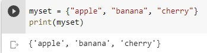

DICTIONARIES AND SETS
DICTIONARIES
Dictionaries คือการจัดเก็บข้อมูลแบบรายการที่สมาชิกแต่ละตัวจะมีองค์ประกอบ 2 อย่าง คือ key และ value โดยหากเราจะเข้าถึงสมาชิกต้องใช้ key เป็นตัวกำหนด
- key จะเป็นข้อมูลสตริงหรือตัวเลขก็ได้ โดยสมาชิกแต่ละตัวจะต้องมีคีย์ที่ไม่ซ้ำกัน
- value จะเป็นข้อมูลชนิดใดก็ได้ อาจเป็นข้อมูลประเภทรายการอื่นๆ เช่น ลิสต์ ทูเพิล หรือ เซต โดยค่าของสมาชิกแต่ละตัวสามารถซ้ำกันได้
ฟังก์ชันต่างๆเกี่ยวกับดิกชันนารี
- keys() อ่านคีย์ทั้งหมด โดยคืนค่ากลับมาเป็นทูเพิล
- values() อ่านค่าทั้งหมด โดยคืนค่ากลับมาเป็นทูเพิล
- items() อ่านรายการทั้งหมด โดยคืนค่ากลับมาเป็นทูเพิล
- clear() ลบสมาชิกทั้งหมดของดิกชันนารี
- get(คีย์) อ่านค่าของสมาชิกที่มีคีย์ตามที่ระบุ
- pop(คีย์) อ่านค่าของสมาชิกที่มีคีย์ตามที่ระบุ จากนั้นลบสมาชิกตัวนั้น
SETS
คือการจัดเก็บชุดข้อมูลที่มีลักษณะคล้ายกับลิสต์หรือทูเพิล แต่มีวิธีการใช้งานและข้อกำหนดที่แตกต่างออกไป โดยลักษณะที่สำคัญของเซตคือ ไม่มีลำดับในการจัดเก็บที่แน่นอน ทำให้ไม่สามารถเข้าถึงสมาชิกตัวใดตัวหนึ่งแบบเจาะจงด้วยเลขลำดับได้ ข้อมูลที่จัดเก็บนั้นจะต้องไม่ซ้ำกัน ถ้าซ้ำกันข้อมูลจะถูกจัดเก็บเพียงแค่ตัวเดียว
Set Method
- add() เพิ่มองค์ประกอบไปยังเซต
- clear() ลบองค์ประกอบทั้งหมดออกจากเซต
- copy() การทำสำเนาค่าที่อยู่ใน set เอาไว้ในตัวแปลที่กำหนด
- difference() ส่งคืนชุดที่มีผลต่างของสองเซตขึ้นไป
- difference_update() ลบรายการที่อยู่ในเซต ที่รวมอยู่ในเซตอื่นที่ระบุ
- discard() ลบรายการที่ระบุ
- intersection() กลับไปที่เซตหนึ่ง, นั่นคืออินเตอร์เซกชันของอีกสองเซต
- intersection_update() ลบรายการที่ไม่มีอยู่ในเซตที่ระบุอื่น ๆ ในเซต
- isdisjoint() ส่งกลับว่าเซตสองเซตมีเชื่อมกันหรือไม่
- issubset() กลับไปยังเซตอื่นว่ามีเซตนี้หรือไม่
- issuperset() กลับไปยังเซตนี้ว่ามีเซตอื่นหรือไม่
- pop() ลบองค์ประกอบจากเซต
- remove() ลบองค์ประกอบที่ระบุ
- symmetric_difference() ส่งคืนเซตที่มีผลต่างสมมาตรของสองเซต
- symmetric_difference_update() แทรกผลต่างสมมาตรระหว่างเซตนี้กับอีกเซต
- union() ส่งคืนเซตที่มีการรวมกันของเซต
- (update) อัปเดตเซตโดยใช้การรวมกันของเซตนี้และเซตอื่น ๆ